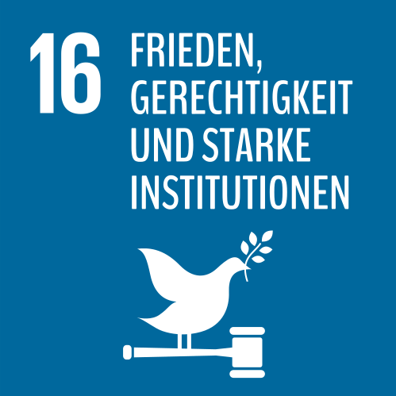

… allen Menschen Zugang zur Justiz ermöglichen und leistungsfähige, rechenschaftspflichtige und inklusive Institutionen auf allen Ebenen aufbauen.
Frieden, körperliche Unversehrtheit und Schutz durch ein stabiles Rechtssystem sind unabdingbare Voraussetzungen für nachhaltige Entwicklung und Wohlstand. Zu viele Menschen sind auf zu schwache Institutionen angewiesen und sind ohne Zugang zu Justiz, zu Informationen und zu anderen Grundfreiheiten.
Die Tötungsrate variiert je nach Region immer noch sehr stark. Während in Ostasien nur einer von 100.000 Menschen vorsätzlich getötet wird, sind es in Lateinamerika 23. 30 Prozent aller Gefangenen weltweit werden ohne Gerichtsurteil festgehalten. 25 Prozent aller Kinder wird immer noch die Registrierung ihrer Geburt verwehrt – Grundvoraussetzung für den Schutz durch das Gesetz.
„Man muss Partei ergreifen. Neutralität hilft dem Unterdrücker, niemals dem Opfer. Stillschweigen bestärkt den Peiniger, niemals den Gepeinigten.“
(Elie Wiesel, Schriftsteller und Friedensnobelpreisträger)
